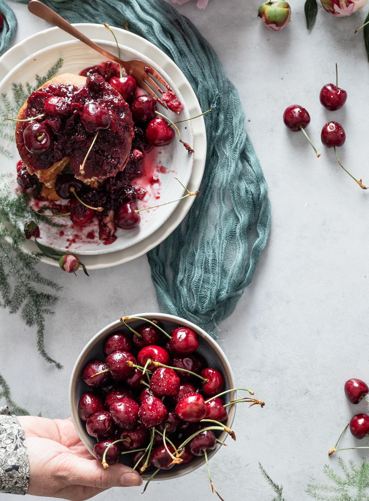

Fruits
Here you will find all seosonal fruits picture and details in brief.

Recipes
Here you will find different types of recipes about fruits.

Blog
Here you will find famous blogs that will keep you heathy and fit.